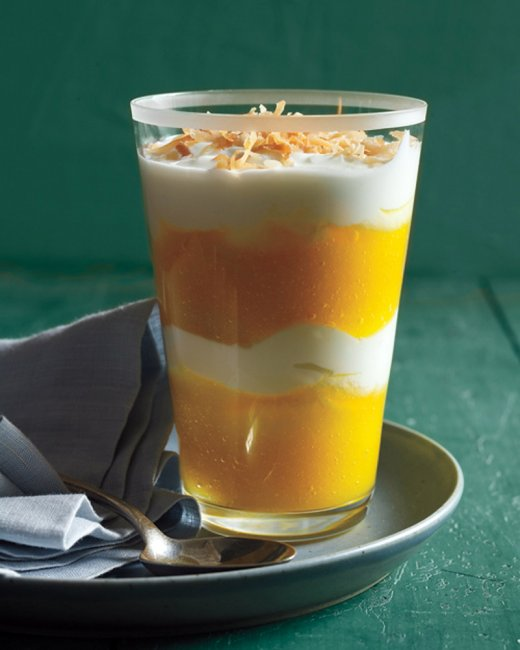

Mango Parfait
A parfait is a combination of yogurt and fruit. This parfait combines plain Greek yogurt with mango puree.

Materials:
- Blender
- Spoon
Ingredients:
- 1 mango, pitted
- 1/4 cup coconut water
- 1/2 cup Greek yogurt
- Toasted coconut for topping
- Gather materials. For help finding materials and ingredients, consult the guide to my kitchen
- Make mango puree by placing the pitted and sliced mango in the blender with 1/4 cup coconut water and pureeing until smooth.
- Spoon 2 tablespoons mango puree into a tumbler and add 1/4 cup Greek yogurt. Repeat layers and top with toasted coconut.